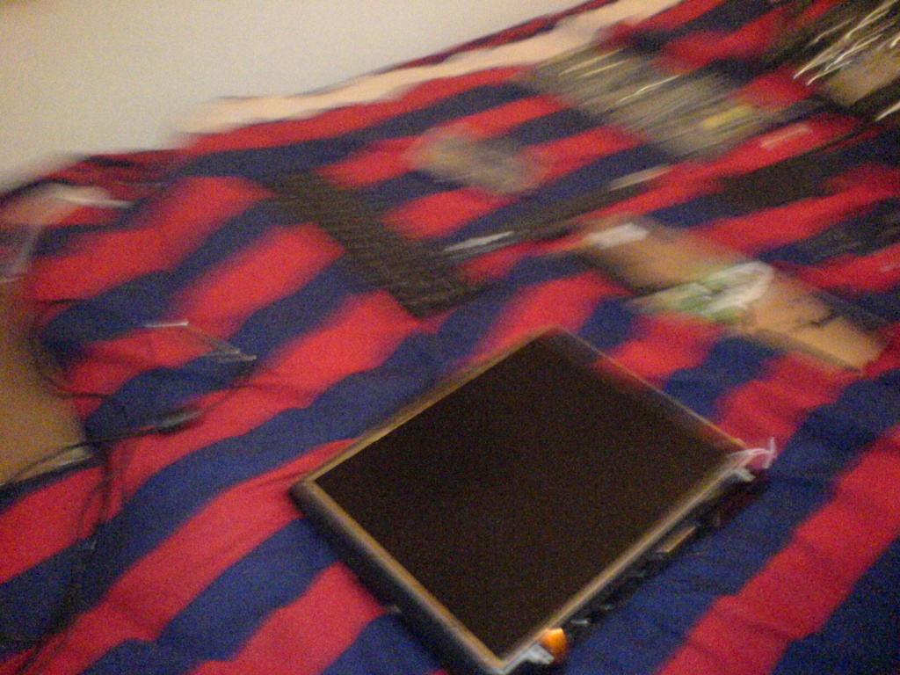
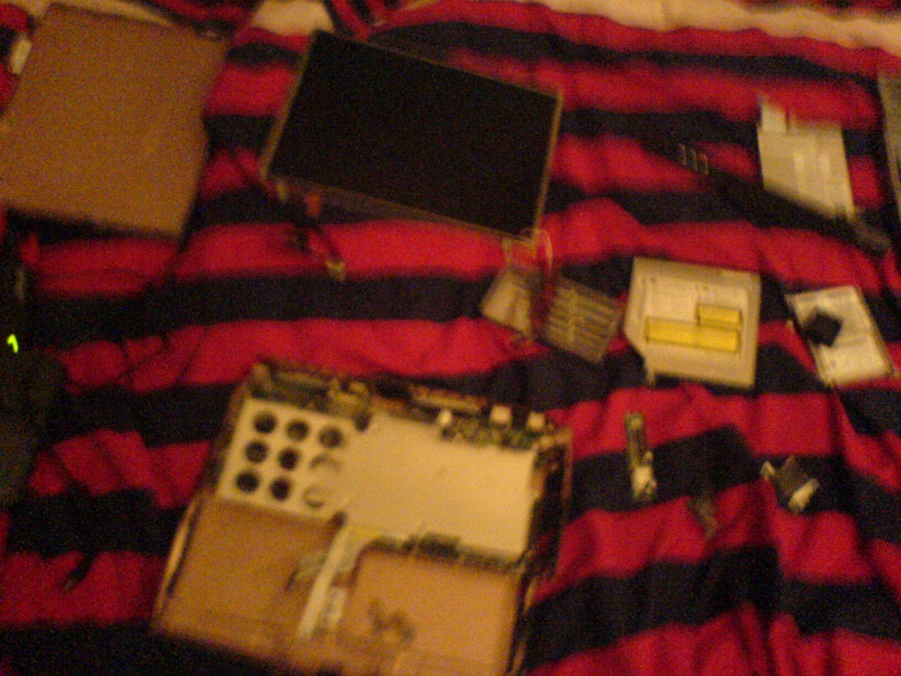
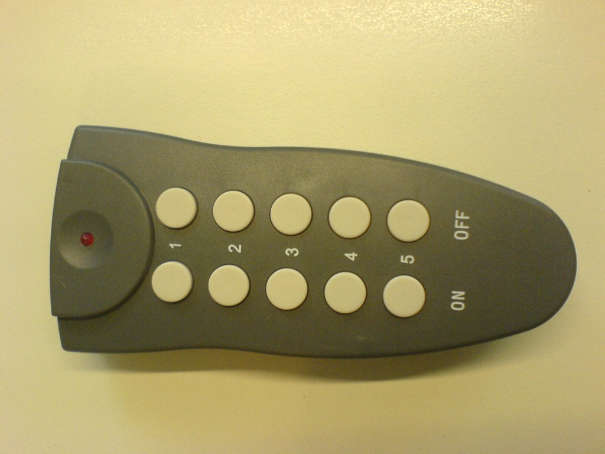

Photoframe(d)
Built in 2007; written in ; edited in December 2015.
Apologies for the poor photo quality.
In 2007 I decided it would be cool to build a digital photo frame, out of a broken laptop. I bought the laptop from a friend of mine, as it was pretty old and useless, considering the keyboard didn’t work. With some help of my grandpa and his tools, I built it. Later, I added speech recognition and control of the lights in my room.
Most of the original source code is lost, and I have since redesigned it, but I thought a writeup of the old design would be nice.
It started with an old laptop. In an impulse I decided to see how quickly I was able to strip it until only the bare essentials were left. It was quite easy to disassemble it, and the wires were long enough to separate the display from the other components.


Once the laptop was disassembled, it was easy enough to go to the DIY store and buy some materials. With some careful measuring, patience and painting twice, the job was done in a few evenings.
To display the photos, a clock, and some RSS feeds, I used a PHP script by Tommy van der Vorst, running in a fullscreen Firefox window. It worked pretty well. After some modifications — resulting in a fork that I called Photoframed — it was used by myself and others for 3 years.

A few months later I stumbled upon this post on a forum, which describes how to easily hack a cheap home automation remote control to hook it up to a computer. There were sets available for about €20 to control lights and devices with a remote control. So I bought two of these sets. The first hack was to hook it up to ordinary lights that are directly connected to a power source, without a wall socket in between. The setup wasn’t very safe, but it worked.

Next, I followed the instructions on the forum post: hook up the remote control to the serial port, detect commands using LIRC, and send them back to the remote control.

It worked fine on the computer, but the problem is that on laptops the serial port is weaker: it usually won’t give a nice and strong 12 volt signal. The solution was rather simple: by hooking up transistors to every button, you can simulate a press of that button simply by putting a small voltage on the transistor. The easiest way to do this is by using the parallel port. Fortunately, the laptop was pretty old so this was no problem.
With some Visual Basic programming, the Microsoft Speech API and some PHP scripts it was possible to control the lights by voice and over the internet. Unfortunately, I lost most of the source code, so I won’t be able to share it here. In the next post I cover rebuilding it.